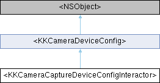

设备配置 More...
#include <KKCameraViewModelProtocol.h>
Inheritance diagram for <KKCameraCaptureDeviceConfigInteractor>:

Instance Methods | |
| (void) | - setupCaptureDevice |
| 设置镜头 | |
| (void) | - setCaptureDevicePostion:cameraMode:completion: |
| (void) | - setCaptureDeviceWithCaptureMode: |
| (void) | - toggleCameraPosition |
| 切换镜头位置 | |
 Instance Methods inherited from <KKCameraDeviceConfig> Instance Methods inherited from <KKCameraDeviceConfig> | |
| (AVCaptureSessionPreset) | - getCameraSessionPreset |
| 通过配置找到sessoin预设名 | |
Class Methods | |
| (BOOL) | + hasAnyAvailableLensForSceneCaptureType: |
Additional Inherited Members | |
| Properties inherited from <KKCameraDeviceConfig> | |
| AVCaptureDevicePosition | cameraPosition |
| 相机设备位置 | |
| KKCaptureMode | captureMode |
| 输出模式，静态还是连续画面 | |
| KKCameraMode | cameraMode |
| KKCaptureDeviceType | captureDeviceType |
| 相机镜头类型 | |
| SceneCaptureType | sceneCaptureType |
| 相机场景模式，不同对焦方式 | |
Detailed Description
设备配置
Method Documentation
◆ hasAnyAvailableLensForSceneCaptureType:
| + (BOOL) hasAnyAvailableLensForSceneCaptureType: | (SceneCaptureType) | sceneCaptureType |
场景模式是否支持
- Parameters
-
sceneCaptureType <sceneCaptureType description#>
◆ setCaptureDevicePostion:cameraMode:completion:
| - (void) setCaptureDevicePostion: | (AVCaptureDevicePosition) | position | |
| cameraMode: | (KKCameraMode) | cameraMode | |
| completion: | (nullable CompletionHandler) | completion | |
根据位置和模式切换设备
- Parameters
-
position 前后位置 cameraMode 拍摄模式 completion <#completion description#>
◆ setCaptureDeviceWithCaptureMode:
| - (void) setCaptureDeviceWithCaptureMode: | (KKCaptureMode) | mode |
根据拍摄模式切换此位置设备
- Parameters
-
mode <#mode description#>
The documentation for this protocol was generated from the following file:
- Shine/Shine/Sections/CameraSection/Protocol/KKCameraViewModelProtocol.h